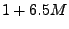

To take advantage of the blocking algorithm, matrix multiplication is implemented using Fast Fourier Transforms (FFT). The optimized FFT routine executes a length 512 FFT in approximately 7200 cycles. I am using a property of the FFT to do two real valued FFTs in one FFT operation (with some overhead). The number of FFTs per block is  where M is the number of microphones. The block size is length 256. So for a sample rate of 8khz, the total computation for the FFT code alone is approximately or about 12 million cycles for 8 microphones. At first this seems pretty good. But after you consider the matrix inverse update code, the FFT overhead, and correcting the filter output, it turns out to be more than 5 or 6 times as much computation. And this doesn't even include beamforming.
Ok, so it still runs in under 150 million cycles, right? Not quite. The memory requirements exceed the 64k on the processor. And even the L2 cache runs considerably slower than the L1 cache. At a minimum we need to try to keep memory in the L2 cache as much as possible. Unfortunately, the algorithm runs through more than 64k of memory 8000 times a second. So just using cache may not be very efficient. Another solution is to use memory overlays. This gives the programmer more control over where the memory is at all times. And this is what I'm currently working on.